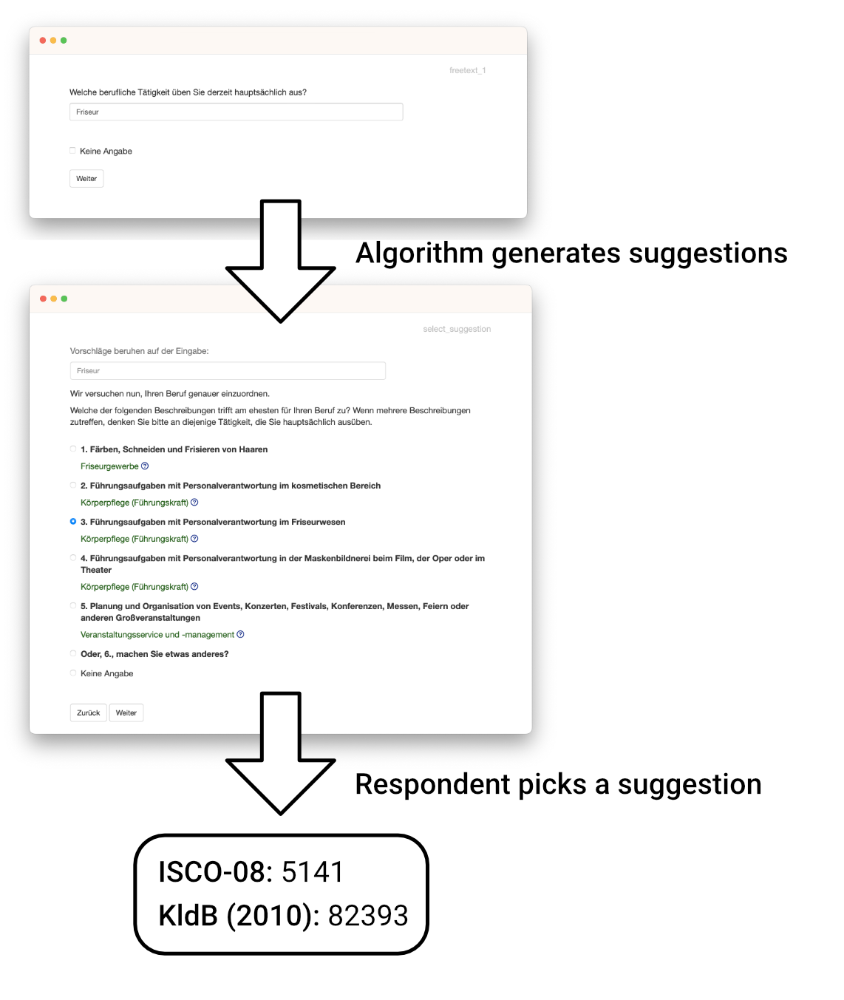

A toolbox to help you with all tasks around the coding and measurement of occupations.
About
Coding people’s occupations into official classifications such as the International Standard Classification of Occupations ISCO-08 or German KldB-2010 is a notoriously difficult problem. This toolbox is designed to make this easier, by helping with many of the tasks surrounding the measurement of occupations: From creating a survey and collecting data all the way to retrieving the final coded responses.
For a detailed overview of the package refer to vignette("occupationMeasurement") or take a look at browseVignettes("occupationMeasurement") to see a list of vignettes describing the package. All vignettes are also available in the online documentation.

Installation
Prerequisites:
- The R Statistical Software (Version 4.1 or higher)
The package can be installed directly from CRAN by running the code below:
install.packages("occupationMeasurement")To install the latest development version from GitHub, run you will need the R package remotes available via install.packages("remotes").
The package can then be installed by running the code below:
remotes::install_github("occupationMeasurement/occupationMeasurement")Usage
Using the interactive App
The interactive app is the easiest way to use the package: It provides a fully-featured, interactive survey application to collect and immediately code occupational data. Starting it is as easy as calling the app()-function.
More information about the interactive app can be found in vignette("app") and the help page ?app.
# Run the interactive shiny app
occupationMeasurement::app()The app also supports custom questionnaires, so you can build your own or use and adapt one of the questionnaires included in the package. E.g., the questionnaire_demo() will explain the functionality of the app, and questionnaire_interviewer_administered() is designed to be read by interviewers in CATI and CAPI surveys. The questionnaire_web_survey() is intended to be used for internet surveys.
library(occupationMeasurement)
# Run the app with additional explanations. The best way to get started.
app(questionnaire = questionnaire_demo())
# Run the app in interviewer-administered ...
app(questionnaire = questionnaire_interviewer_administered())
# or online surveys
app(questionnaire = questionnaire_web_survey())Alternative Usage
Besides the interactive app, there are also two alternative ways of using this package, with varying degrees of flexibility and convenience:
- Use the included JSON
api()to use the package with your own survey-tool or application for maximum flexibility. - Use the R functions directly to implement your own custom functionality or package via e.g.
get_job_suggestions().
You can find more information on how to use these functionalities in vignette("occupationMeasurement").
Getting Help & Contributing
If you encounter any issues / bugs in the package, feel free to file an issue on GitHub, ideally alongside a clear reproducible example or description.
We also welcome contributions to the package. If you want to contribute to the development of the package, we recommend to first open an issue to discuss your ideas and plans, before working on a pull request.
If you have any questions about the package or plan to use it in a project, feel free to reach out to one of the maintainers via email. The list of maintainers and their email addresses is in the DESCRIPTION file.
Package Development
This section is only relevant when further developing the package itself.
By default the package will only install dependencies it absolutely needs to run. For developing the package or running tests, the following packages can be installed via the snippet below.
# Install development dependencies
install.packages(c(
"devtools",
"testthat",
"shinytest2",
"httr",
"withr",
"callr",
"usethis",
"mvtnorm",
"readxl",
"styler",
"knitr",
"rmarkdown",
"DiagrammeR",
"sessioninfo"
))Testing
The included tests can be run with the following snippet.
devtools::test()It is recommended to also run a more detailed check via the following snippet.
devtools::check()Formatting
After making changes to the code, it is advised to automatically format all code with the {styler} package. This can be done with the following snippet.
styler::style_pkg()Documentation
The documentation website is powered by {pkgdown}. It can be rebuilt with the following snippet.
pkgdown::build_site()To set up everything for hosting the documentation on github pages use usethis::use_pkgdown_github_pages().
During development, roxygen2::roxygenise() is useful to update .Rd-files.